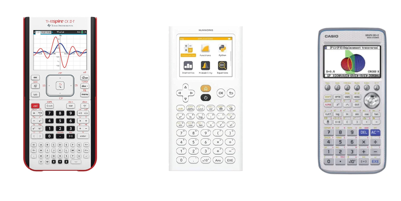
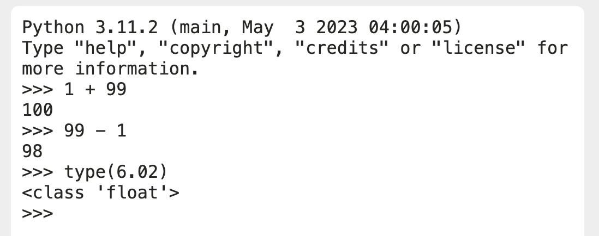

calculer en python
Utiliser l’ordinateur comme une calculatrice
Diversité apparente des calculatrices

exemple de calculatrices programmables
Les calculatrices permettent d’executer les mêmes calculs et donnent les mêmes résultats. Leurs fonctions (boutons) peuvent sembler différents, mais l’interprétation par la machine est la même. La différence se fait dans l’interface proposée à l’utilisateur.
Et des editeurs python
applications de programmation en lange python
Programmer en python, c’est s’affranchir de cette diversité. N’importe quelle application dédiée à la programmation python traduira votre code de la même manière.
Voyons comment utiliser un environnement de programmation python pour effectuer des calculs…
Choix d’un mini editeur Python
Ouvrir dans winpython > python QTConsole

Les nombres entiers et décimaux
Un entier: C’est un nombre qui n’a pas de point décimal.
valeurs possibles: 1, 2492042932330932, -23,...
un nombre entier négatif: s’écrit avec un $-$ devant: $-10$ par exemple.
un nombre décimal: s’écrit avec un point comme séparateur, comme par exemple: 6.02
Les grands nombres peuvent être exprimés avec l’opérateur e (puissance de 10): 12e3 est une autre manière d’écrire 12000.
En langage python, ces données sont représentées par des entiers (int: integer), ou par des nombres à virgule flottante (float)
On peut tester la nature d’une donnée avec la fonction type en python. Par exemple type(6.02) donne float
Les opérations de base
Un langage informatique permet de réaliser des opérations sur des valeurs. L’écriture de ces opétations peut différer de ce que l’on écrit avec la calculatrice. Voici la liste des opérateurs en Python:
| opérateur | rôle | équivalent sur une calculatrice |
|---|---|---|
| + | addition | $1 + 99$ |
| - | soustraction | $99 - 1$ |
| * | multiplication | $10 \times 10$ |
| / | division | $\tfrac{1}{3}$ |
| // | division entière | pas d’équivalent |
| % | reste de la division entière | pas d’équivalent |
| ** | exposant | $2^{4}$ |
| e | puissance de 10 (pour l’écriture en notation scientifique) | $1.2E-3$ ou $1.2\times 10^{-3}$ |
Résumé des principales opérations sur les valeurs numériques
Tester les opérations suivantes dans l’editeur Python et répondez aux questions:
| opérateur | exemple |
|---|---|
| + | 12 + 10 |
| * | 12 * 0.1 |
| / | 12 / 10 |
| / | 0.3 / 3 |
| // | 12 // 10 |
| % | 4 % 2 |
| % | 5 % 2 |
| - | 10 - 12 |
| ** | 2**8 |
| e | 12e-3 |
*, /, +, -, () |
3-2*(50/2+3) |
| % | 1%3 |
| % | 2%3 |
| % | 3%3 |
| % | 4%3 |
| % | 5%3 |
-
Question a: Quel est le rôle des opérateurs
*, //, %, **, e? -
Question b: Que donne
N%2siNest divisible par 2? (Npair) -
Question c: Calculer à l’aide de la console le résultat de: $11,27 + \tfrac{9.10^{21}}{10^4}$. Ecrivez sur votre cahier l’expression utilisée en python pour effectuer ce calcul, ainsi que le résultat, exprimé en langage mathématique.
Aide: $11,27$ => $11.27$ en python, et $9.10^{21}$ => $9e21$
- Question d: Quel opérateur est prioritaire entre
/et+? Comme par exemple dans le calcul2*(50/2+3)
Chaines de caractère
C’est une séquence constituée d’un ou plusieurs caractères, entourés de guillemets simples ou doubles.
Notez que des chiffres mis entre guillemets sont des chaines de caractères et ne peuvent pas être manipulés comme des nombres (voir plus loin).
Affichage avec la fonction print
Pour afficher une chaine de caractères, on utilise la fonction print
Si vous testez cet exemple dans une console python, écrivez simplement print("Bonjour") sans le symbole >
> est indiqué pour exprimer la différence entre (votre) l’entrée et la sortie.
Remarquez l’utilisation de guillemets doubles DANS la chaine de caractères. C’est pour cette raison que l’on utilise des guillemets simples pour définir la chaine de caractères.
- Affichage multiple: On peut afficher plusieurs chaines de caractères ou combiner avec des nombres en séparant ceux-ci par une virgule, dans la fonction
print
- Question e: Ecrire l’instruction python, utilisant la fonction
print, avec plusieurs arguments, pour générer la sortie suivante (compléter):
Astuce: Mettre les 2 caractères \n dans la chaine de caractères pour retourner à la ligne.
Opérations sur les chaines de caractères
Opérateurs + et *
Les opérateurs + et * fonctionnent avec les chaines de caractère.
à tester dans l’éditeur Python:
| opérateur | exemple |
|---|---|
+ |
"a"+"b" |
* |
"bonjour" * 10 |
+,*,() |
("bonjour" + " ") * 10 |
- Question f: expliquer ce que réalisent chacun des opérateurs,
+et*
Addition entier + chaine
On ne peut pas ajouter des chaines de caractères à des nombres…
Une erreur est alors retournée dans la console.
- Question g: Relever ce message d’erreur (la fin du Traceback à partir de TypeError…)
Relations d’ordre
Opérateurs !=, ==, >, <, >=, <=
Relations d’ordre sur les nombres
Les opérations d’ordre sont toujours évaluées à True ou False.
L’égalité est testée avec l’opérateur double égal == et l’inégalité avec l’opérateur !=
Résumé
| opérateur | pour tester… |
|---|---|
== |
l’égalité |
!= |
l’inégalité (est différent de) ! |
| > | l’ordre supérieur |
| < | l’ordre inférieur |
| >= | l’ordre supérieur ou égal |
| <= | l’ordre inférieur ou égal |
à vous de jouer… testez chacune des expressions
| opérateur | exemple |
|---|---|
== et nombres entiers |
10*5 == 50 |
!= et nombres entiers |
10*4 != 50 |
| >= et nombres entiers | 10*5 >= 50 |
== et nombres réels |
0.1 == 0.3/3 |
>,+,/,*,() |
(50/2+3) > 12.5*2 |
Remarque: Le test de l’égalité n’est pas adapté pour les nombres réels. Seulement pour les nombres entiers. Ainsi, en Python, l’opération 0.1*3 == 0.3 renvoie … False!
Relation d’ordre sur les caractères
On peut réaliser les opérations de comparaison >, <, ==, !=sur les chaines. Et aussi le test d’appartenance in, not in. Ces opérations retournent un booléen.
-
comparaison d’ordre:
"A" < "B"vautTrue,"Ab" < "A"vautFalse. -
d’égalité:
"HA" == "ha"vaut False -
Question h: que valent chacune des opérations:
"A" == "a""Ab" < "Ac""Ab" > "A""Books" > "Money"
L’opérateur in permet de tester si une suite de caractères se trouve dans un chaine:
-
"ou" in "jour"vautTrue -
"ou" not in "jour"vaut False -
Question i: que valent chacune des opérations:
"Bo" in "Books""Bk" in "Books"
Les valeurs logiques
Une valeur logique c’est True ou False. Il n’y a donc que 2 valeurs possibles.
Une opération de comparaison, utilisant les signes ==, ‘!=’, >, >=, <, <=, ou d’appartenance (in) retourne TOUJOURS un booléen True ou `False.
Expressions possibles: 0 == 0, 8+1 == 3 * 3, 13 >= 0, ...
On peut les combiner dans des formules logiques avec les opérateurs not, and, or.
- Question j: que valent chacune des opérations:
12>3 and 3>112>3 and 1==012>3 or 1==012<3 or 1==0
Portfolio
- Quels sont les 4 types simples en python que vous avez vus dans ce chapitre? (int: entier, float: flottant, …)
- Que vaut le nombre suivant, en notation mathématique:
123e3 - Pour les entiers, donner un exemple d’utilisation de l’opérateur
//et de l’opérateur% - Que donne
x%2sixest divisible par 2 (x est pair)? - Quel résultat obtient-on avec
0.1 == 0.3/3? Expliquer. - On saisit l’instruction suivante en python
Expliquer le message d’erreur obtenu.
- Pour les chaines de caractères, on appelle concaténation l’addition sur 2 chaines ou plus. Quel est l’opérateur qui réalise ceci?
- Que donne l’expression: "Aïe" * 3
- Donner un exemple d’utilisation du mot clé
in - Donner un exemple de comparaison d’ordre lexicographique entre chaines de 2 caractères.
- Pourquoi
12>3 and 1==0vautTrue, alors que12>3 or 1!=0vautFalse?